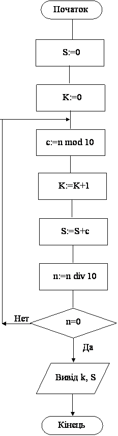

Назад
Зміст
Вперед
Задачі на перебір цифр натурального числа
Описаний нижче стандартний алгоритм дозволяє виконувати будь-які дії з цифрами натурального числа, в незалежності від значності числа.
Число, після використання цього алгоритму, стає рівним 0! Тому рекомендується зберігати вхідне значення числа у іншій змінній.
Приклад 1
Дано натуральне число n. Визначте у ньому кількість та суму цифр.
Результат роботи програми
| Ввід | Вивід | Пояснення |
|---|
| 2456 | 4 17 | Кількість цифр 4, а їх сума 17 |
| 15 | 2 6 | Кількість цифр 2, а їх сума 6 |
Змінні:
Вхідні:
- n – натуральне число (цілого типу Longint)
Вихідні:
- k –кількість цифр числа (цілого типу byte).
- s – сума цифр числа (цілого типу byte)
Проміжні:
- c – остання цифра числа (цілого типу byte)
Алгоритм
- Спочатку потрібно ввести число оператором read(n).
- Нам потрібно знайти суму та кількість. Тому встановимо початкове значення змінним k та s, присвоїмо їм 0.
- Згадаємо формулу знаходження останньої цифри числа: c:= n mod 10. Ця формула вірна для числа будь-якої значності.
- Згадаємо, що після виконання оператору n:=n div 10, від числа відкидається остання цифра.
- На цих двох формулах заснований такий алгоритм: обчислюємо останню цифру числа, робимо з ній потрібні дії (знаходимо кількість, суму, найбільшу цифру, і.т.д), потім цифру відкидаємо. Це робимо, поки у введеному числі не залишиться цифр, тобто число стане 0. Ясно, що для такого алгоритму потрібен цикл с після умовою repeat. Докладніше, у цьому циклі будемо виконувати такі дії:
- Оператор c:= n mod 10 обчислює останню цифру числа.
- Оператор k:=k+1 збільшує лічильник цифр числа.
- Оператор s:=s+c накопичує знайдену цифру у суму.
- Оператор n:=n div 10 відкидає останню цифру числа. Цей оператор дуже важливий, бо він впливає на умову. Якщо його не написати, програма зациклиться.
- Перевіряється умова n=0 – чи є ще цифри у числі?
- Якщо умова не вірна, тобто цифри у числі є, то виконується перехід на початок циклу (пункт5).
- Якщо умова вірна, тобто цифр у числі немає, то цикл завершується і виконується перехід на оператор, що іде після циклу (пункт 6).
- Коли цикл закінчиться, тобто будуть видалені всі цифри числа n виводимо на екран знайдені кількість та суму цифр оператором writeln( k,' ',s).
Блок–схема програми

Програма
var n:longint; c,s,k:byte;
begin
read(n);
k:=0; s:=0;
repeat
c:= n mod 10;
k:=k+1; s:=s+c;
n:=n div 10;
until n=0;
writeln( k,' ',s);
end.
|
Трасування програми
Проводячи трасування програми, потрібно обов’язково дивитись текст програми!
| Оператор | n | c | s | k | Пояснення |
|---|
| read(n) | 2456 | | | | Ввід числа |
| k:=0 | | | | 0 | Встановлення початкового значення k |
| s:=0 | | | 0 | | Встановлення початкового значення s |
| c:= n mod 10 | | 6 | | | Початок циклу. Обчислення останньої цифри числа n=2456 |
| k:=k+1 | | | | 1 | Збільшення лічильника цифр |
| s:=s+c | | | 6 | | Накопичення цифри у суму |
| n:=n div 10 | 245 | | | | Відкидання останньої цифри |
| until n=0 | | | | | Перевірка умови. Умова невірна, тому перехід на початок циклу. |
| c:= n mod 10 | | 5 | | | Початок циклу. Обчислення останньої цифри числа n=245 |
| k:=k+1 | | | | 2 | Збільшення лічильника цифр |
| s:=s+c | | | 11 | | Накопичення цифри у суму |
| n:=n div 10 | 24 | | | | Відкидання останньої цифри |
| until n=0 | | | | | Перевірка умови. Умова невірна, тому перехід на початок циклу. |
| c:= n mod 10 | | 4 | | | Початок циклу. Обчислення останньої цифри числа n=24 |
| k:=k+1 | | | | 3 | Збільшення лічильника цифр |
| s:=s+c | | | 15 | | Накопичення цифри у суму |
| n:=n div 10 | 2 | | | | Відкидання останньої цифри |
| until n=0 | | | | | Перевірка умови. Умова невірна, тому перехід на початок циклу. |
| c:= n mod 10 | | 2 | | | Початок циклу. Обчислення останньої цифри числа n=2 |
| k:=k+1 | | | | 4 | Збільшення лічильника цифр |
| s:=s+c | | | 17 | | Накопичення цифри у суму |
| n:=n div 10 | 0 | | | | Відкидання останньої цифри |
| until n=0 | | | | | Перевірка умови. Умова вірна, тому цикл завершується і перехід на оператор після циклу. |
| writeln(k,' ',s) | | | | | Вивід знайдених значень на екран |
Приклад 2
Дано натуральне число. З’ясуйте, скільки разів у ньому зустрічається перша цифра.
Для розв’язання цієї задачі потрібно два перебори числа: перший перебір знаходить першу цифру числа, а другий перебір підраховує, скільки таких цифр у числі.
Результат роботи програми
| Ввід | Вивід | Пояснення |
|---|
| 5455 | 3 | Перша цифра 5. Таких цифр 3 |
| 4 | 1 | Перша цифра 4. Таких цифр 1 |
Змінні:
Вхідні:
- n – натуральне число (цілого типу Longint)
Вихідні:
- k –кількість цифр числа, що дорівнюють першій цифрі (цілого типу byte).
Проміжні:
- c – остання цифра числа (цілого типу byte)
- c1 – перша цифра числа (цілого типу byte)
- x – змінна для запам’ятовування вхідного значення числа.
Алгоритм
- Спочатку потрібно ввести число оператором read(n).
- Потім потрібно знайти значення першої цифри. Для знаходження першої цифри будемо у циклі відкидати останню цифру у числі, поки не залишиться одна цифра. Цей цикл змінить число n, але значення цього числа нам ще буде потрібно для знаходження кількості, тому перед циклом, значення введеного числа потрібно зберегти у іншу змінну оператором x:=n.
- Знайдемо першу цифру числа таким чином: перевіримо, якщо у числі n більше одної цифри, то відкинемо останню. Ясно, що це повинен бути цикл while, бо спочатку перевіряємо умову (чи потрібно відкидати цифру), а потім, якщо потрібно, відкидаємо. Докладніше цикл пошуку першої цифри:
- Перевіряється умова n>9.
- Якщо умова вірна, тобто у числі декілька цифр, то відкидається остання цифра оператором n:=n div 10 і виконується перехід на початок циклу (знов на перевірку умови).
- Якщо умова невірна (тобто число складається з одної цифри), то тіло циклу пропускається і він завершується.
- Після завершення циклу запам’ятаємо першу цифру, що залишилась у числі n у змінну c1 оператором c1:=n.
- Тепер потрібно знайти у числі кількість цифр, що дорівнюють c1. Для цього встановимо початкове значення лічильника оператором k:=0.
- Щоб у числі знайти кількість цифр, що дорівнюють c1, будемо використовувати алгоритм, що описаний у прикладі 1. Але вхідне число n змінилося, тому будемо використовувати його копію у змінній x.
- Тобто у циклі будемо виконувати такі дії:
- Оператор c:= x mod 10 обчислює останню цифру числа x.
- Оператор if c=c1 перевіряє, чи збігається ця цифра з першою цифрою числа.
- Якщо так, то оператор k:=k+1 збільшує лічильник таких цифр.
- Оператор x:=x div 10 відкидає останню цифру числа x.
- Перевіряється умова x=0 – чиє ще цифри у числі?
- Якщо умова не вірна, тобто цифри у числі є, то виконується перехід на початок циклу (пункт 7).
- Якщо умова вірна, тобто цифр у числі немає, то цикл завершується і виконується перехід на оператор, що іде після циклу (пункт 8).
- Коли цикл закінчиться, тобто будуть видалені всі цифри числа x виводимо на екран знайдену кількість оператором writeln(k).
Програма
var n, x:longint; c,c1,k:byte;
begin
read(n); x:=n;
while n>9 do
n:=n div 10;
c1:=n;
k:=0;
repeat
c:= x mod 10;
if c=c1 then k:=k+1;
x:=x div 10;
until x=0;
writeln(k);
end.
|
Приклад 3
Дано натуральне число n. Знайдіть максимальну цифру. Якщо максимальних цифр декілька, то визначте порядковий номер першої з них, якщо цифри рахувати зліва направо.
Для розв’язання цієї задачі потрібно використовувати два алгоритми: перший – перебір цифр числа, а другий – знаходження найбільшої цифри.
Результат роботи програми
| Ввід | Вивід | Пояснення |
|---|
| 4525 | 5 2 | Найбільша цифра 5. Таких цифр 2.
Якщо рахувати цифри зліва направо, то перша з них має порядковий номер 2. |
Змінні:
Вхідні:
- n – натуральне число (цілого типу Longint)
Вихідні:
- max–найбільша цифра числа n (цілого типу byte).
- nmax– порядковий номер першої максимальної цифри, якщо рахувати зліва направо (цілого типу byte).
Проміжні:
- c – остання цифра числа (цілого типу byte)
- k – порядковий номер цифри, якщо рахувати справа наліво (цілого типу byte).
Алгоритм
- Спочатку потрібно ввести число оператором read(n).
- Встановимо початкове значення лічильника цифр оператором k:=0.
- Для знаходження найбільшого або найменшого, потрібно встановити початкове значення змінній, в який це значення буде зберігатися. Для знаходження найбільшого, початкове значення повинно бути найменшим з можливих (для цифр 0), а для знаходження найменшого, початкове значення повинно бути найбільшим з можливих (для цифр 9). Для знаходження найбільшої цифри, встановимо початкове значення найменше можливе, тобто 0 оператором max:=0.
- У циклі, що перебирає цифри, будемо виконувати такі дії:
- Оператор c:= n mod 10 обчислює останню цифру числа n.
- Оператор k:=k+1 збільшує лічильник цифр. Число перебирається, починаючи з останньої цифри, тому цей лічильник, вказує порядковий номер цифри, якщо їх рахувати справа наліво.
- Якщо знайдена цифра c>=max, то запам’ятовуємо значення c у змінній max оператором max:=c та запам’ятовуємо порядковий номер k у змінній nmax оператором nmax:=k.
- Оператор n:=n div 10 відкидає останню цифру числа n.
- Перевіряється умова n=0 – чиє ще цифри у числі?
- Якщо умова не вірна, тобто цифри у числі є, то виконується перехід на початок циклу (пункт 4).
- Якщо умова вірна, тобто цифр у числі немає, то цикл завершується і виконується перехід на оператор, що іде після циклу (пункт 5).
- Коли цикл закінчиться, у змінній max буде значення найбільшої цифри, а у змінній nmax її порядковий номер, якщо рахувати цифри у числі справа наліво. Але нам потрібно знайти порядковий номер найбільшої цифри, якщо цифри рахуються зліва направо. Для цього роздивимось приклад:
| 3 | 6 | 2 | 1 | 7 | Число |
|---|
| 5 | 4 | 3 | 2 | 1 | Порядковий номер цифри, якщо рахувати цифри у числі справа наліво (справа) |
| 1 | 2 | 3 | 4 | 5 | Порядковий номер цифри, якщо рахувати цифри у числі зліва направо (зліва) |
Помітимо, що у числі п’ять цифр і сума порядкових номерів кожної цифри, якщо рахувати справа наліво та зліва направо дорівнює 6. Тому:
(зліва) + (справа) = (кількість цифр у числі) + 1, звідси
(зліва) = (кількість цифр у числі) + 1 – (справа).
Якщо для порядкового номера найбільшої цифри при рахуванні справа та зліва використовувати одну і ту ж змінну nmax, то порядковий номер максимальної цифри, якщо рахувати зліва направо буде nmax:=k+1-nmax.
- Потім виводимо на екран знайдені значення оператором writeln(max,' ',nmax).
Програма
var n:longint; c,max,nmax,k:byte;
begin
read(n); max:=0;k:=0;
repeat
c:= n mod 10;
k:=k+1;
if c>=max then
begin max:=c; nmax:=k; end;
n:=n div 10;
until n=0;
nmax:=k+1-nmax;
writeln(max,' ',nmax);
end.
|
Варіанти задач
- Дано натуральне число n. Знайдіть кількість цифр 5.
- Дано натуральне число n. Знайдіть суму квадратів його цифр.
- Дано натуральне число n. Знайдіть середнє арифметичне його цифр.
- Дано натуральне число n. Знайдіть добуток його цифр.
- Дано натуральне число. Знайти його першу цифру.
- Дано натуральне число n. Знайдіть суму його першої та останньої цифр.
- Дано натуральне число. Знайти його другу (с початку) цифру.
- Дано натуральне число. Чи є в ньому цифра 3?
- Дано натуральне число. З’ясуйте, скільки разів у ньому зустрічається остання цифра.
- Дано натуральне число n. З’ясуйте, скільки разів у ньому зустрічається цифра A.
- Дано натуральне число n. Чи вірно, що сума його цифр більша за D?
- Дано натуральне число n. Чи вірно, що добуток його цифр більше за B?
- Дано натуральне число n. Чи є в ньому цифра A?
- Дано натуральне число. Чи вірно, що воно починається та закінчується однаковими цифрами?
- Дано натуральне число. З’ясуйте, чи є різниця між його максимальною та мінімальною цифрами парним числом.
- Дано натуральної число. З’ясуйте, яка цифра розташована у ньому лівіше: максимальна чи мінімальна.
- Дано натуральне число. З’ясуйте, скільки разів у ньому зустрічається максимальна цифра.
Назад
Зміст
Вперед